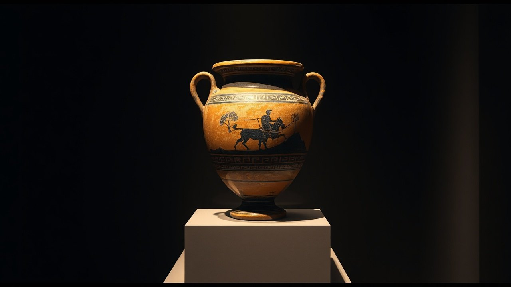

Son of the highest god by a mortal woman. He wrestled Death with his bare hands and won. He went down into the underworld and came back. He died in agony on a hill, his mortal half was destroyed, his divine half rose to heaven, and when his followers searched the ashes they found no bones at all. Then the ancient world worshipped him as a god who had once been a man.
His name was Heracles, and every line of that story is in Greek sources written centuries before the Gospels. This is part 14 of THE BLUEPRINT. As always: primary sources on the table, dates attached, and the fake parallels killed before anyone gets to use them.

Fathered by the highest god
The conception story is old and it is dated. The Shield of Heracles, attributed to Hesiod and composed in the seventh or sixth century BC, opens with it: Zeus, king of the gods, came to Alcmene of Thebes in the form of her own husband and fathered a son who would be, in the poem's words, a defender against ruin for gods and men. Diodorus of Sicily later adds the detail the ancients loved: Zeus made the night three times its natural length, because so great a hero needed a longer making. The structure is exact and it is everywhere in this series by now: highest god, mortal woman, a son who is both. Kill the fake version before anyone can reach for it. Alcmene was no virgin. She was a married woman, deceived, in an ordinary bed. Anyone selling you a virgin-born Heracles is selling you a fabrication, and the real parallel does not need it. The real parallel is the god-man himself: one person, divine father, human mother, walking the earth.
He wrestled Death and won
In 438 BC, four and a half centuries before the Gospels, Euripides staged a play in Athens called Alcestis. A queen has died in her husband's place. Heracles arrives, learns what happened, and does something no Gospel ever dared stage: he goes to the tomb, ambushes Thanatos, Death himself, and beats him in a physical wrestling match. He walks back into the house with the dead woman alive on his arm. A hero who conquers Death and hands a dead loved one back to her family, performed before a live audience while Athens still had a democracy. The Gospels tell you death was defeated. Euripides showed it, with a body lock.
Down to the dead, and back
The final labor sent him where no living man goes. Heracles descended into Hades itself, overpowered the hound Cerberus, and walked back out into daylight. Homer already knows the story in the eighth century BC. And Homer preserves something stranger. In Odyssey book 11, Odysseus meets Heracles among the dead, and the poet stops to explain a paradox: what Odysseus sees is only his phantom, his image, while Heracles himself feasts with the immortal gods on Olympus. One figure, existing simultaneously in two natures, the mortal shadow below and the divine person above. That is an eighth-century BC poet straining ordinary language to describe a man who is also a god. Centuries later, church councils would spend generations straining language over the same problem.
They searched the pyre for his bones and found nothing. So they concluded he had passed from among men into the company of the gods.
The pyre, the missing bones, the ascension
The death scene is the heart of it. Poisoned by a tunic soaked in centaur's blood, dying in agony he cannot stop, Heracles has a pyre built on the summit of Mount Oeta and is burned alive. Sophocles put the agony on stage around 440 BC in Women of Trachis and ends the play at the edge of the fire. What the tradition said happened next is recorded plainly in Diodorus, book 4: when his companions came afterward to collect the bones, they found not a single bone anywhere. So they concluded he had passed from among men into the company of the gods. A search for remains. No remains. Therefore, ascension. If that evidentiary structure sounds familiar, it should: it is the empty tomb argument, made about a Greek hero, in circulation before the Gospels were written.
Ovid, writing his Metamorphoses in the years around 8 AD, before any Gospel existed, has Jupiter spell out the theology over the burning pyre: only what his son had from his mortal mother can burn. What he has from his father is immortal, beyond fire, beyond death, and Jupiter will receive it into heaven. The mortal nature dies. The divine nature rises. That is a two-natures doctrine, stated by the father god himself, in a Roman bestseller a generation before Christianity reached Rome.
You can look at it
This is not late legend either. In Munich, the Staatliche Antikensammlungen holds an Athenian red-figure pelike by the Kadmos Painter, inventory 2360, painted around 420 to 400 BC. The scene: the pyre still burning on Mount Oeta below, and Heracles rising above it in a chariot, escorted toward Olympus. Greek believers were putting the ascension on their pottery four centuries before the Acts of the Apostles described a man taken up into the sky.
The church saw it too
You do not need a modern skeptic to draw the comparison, because a church father drew it first. Justin Martyr, writing his First Apology to the Roman emperor around 150 AD, lists the sons of Jupiter the pagans already believed in and names Hercules, who gave himself to the flames, among those said to have ascended to heaven. In his Dialogue with Trypho he goes further and explains the resemblance the only way he can: the devil, he says, put forward Heracles in advance, a counterfeit made before the original. A second-century Christian, on the record, conceding the parallel exists and reaching for preemptive demonic plagiarism to survive it. That is not an internet meme. That is the church's own second-century paperwork.
Where the differences run out
Name the defence at its strongest, then watch it come apart. Heracles was not virgin-born. He was not resurrected: apotheosis is elevation through destruction, not a dead body walking out of a tomb, and there is no third day. Coming back alive from Hades is a round trip, not a resurrection, because he never died to make it. His death atones for nothing; it is a murder by poison, not a sacrifice for sin. He had no disciples, no teaching, no church, and the popular claim that his twelve labors map onto twelve apostles is a modern invention with no ancient source behind it. Every one of those is a difference of detail, and not one of them touches the architecture. What the sources prove is heavier than any copying charge: every Greek-speaking convert Christianity ever made had grown up inside a world where the son of the highest god and a mortal woman suffered, died, left no remains, and rose to heaven. The story was not new. The audience was pre-trained.
In 325 AD the church gathered at Nicaea to define, in a creed, how one person could be fully God and fully man. Eight centuries earlier, Homer was already juggling a Heracles who feasted on Olympus while his shadow walked in Hades, and Ovid had Jupiter explain over a burning pyre which half of his son could die and which half could not. The vocabulary of the god-man was not invented in a council chamber. It was inherited from a world that had been arguing about Heracles for the better part of a millennium.
So the question stands. When the Greek world heard about a Son of God who suffered, died, and ascended, did it hear a revelation, or a revision? Template, saturation, or coincidence? Follow THE BLUEPRINT as the investigation continues.
This is Part 14 of 23 in THE BLUEPRINT, an investigation into the pre-Christian figures who carried the pieces of the Jesus story. See every part of the series here.
Before you go
7 books the Vatican doesn't want you reading. Free PDF — the texts they cut, with sources. Joined by 140+ Inner Circle members.
No spam. Unsubscribe anytime.
Go deeper
The Hidden Canon, Vol. I — Enoch. Jubilees. Thomas. Mary. Judas. 90 pages, 14 chapters, every receipt cited. The books your Bible quietly removed.
Read the Canon →Books that informed this investigation
As an Amazon Associate, Hidden Epoch earns from qualifying purchases. Cost to you: nothing.
Research safely
The VPN we use to research without being tracked. First 3 months free.
Get NordVPN →